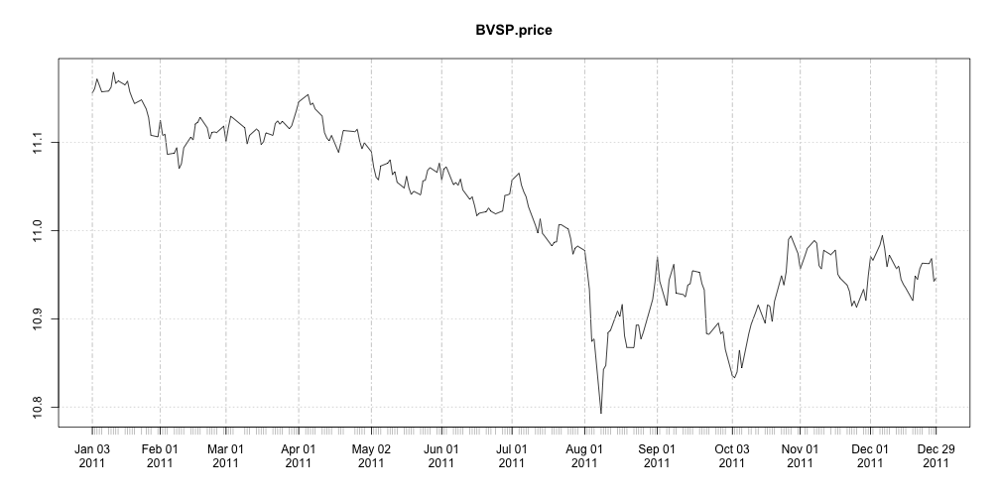
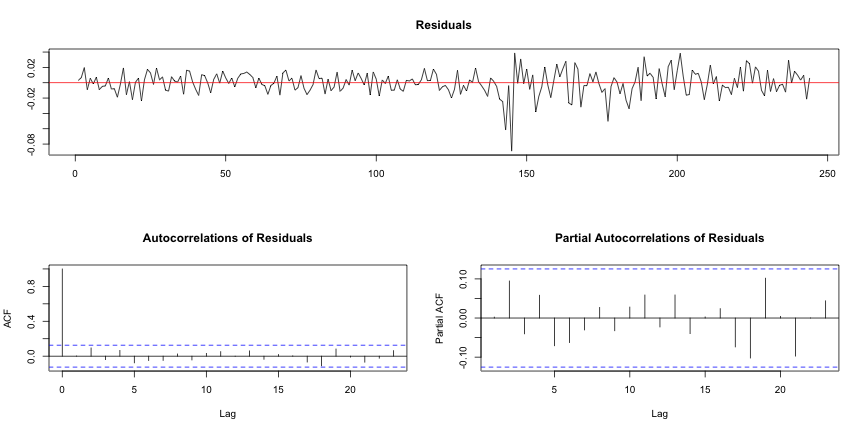

Testes de raiz unitária
Avaliando estacionariedade em séries temporais financeiras
Recursos
Testes de Raiz Unitária
Definição do teste de raiz unitária
Existem diversos testes de raiz unitária (RU)
- Augmented Dickey-Fuller (ADF)
- Phillips-Perron (PP)
- Kwiatkowski-Phillips-Schmidt-Shin (KPSS)
- ...
Na maioria dos testes a hipótese nula é de que a série tenha raiz unitária, e portanto não seja estacionária, logo: \[ \begin{split} H_0: & \textrm{tem raiz unitária (não é estacionária)}\\ H_1: & \textrm{não tem raiz unitária (é estacionária)} \end{split} \]
No teste KPSS a hipótese nula é de que não existe raiz unitária.
Implementando o teste de raiz unitária
Temos uma série temporal \(y_t\) e desejamos estimar o seguinte modelo para esta série:
\[ y_t = \phi y_{t-1} + \varepsilon_t \]
que claramente é um AR(1) e está sujeito a
\[ \varepsilon_t \sim iid\, N(0, \sigma^2)\,\, \forall \,\, t \\ \mathrm{E}\left[ \varepsilon_t\varepsilon_s \right] = 0,\,\, \forall \,\, t \neq s \]
Para que \(y_t\) seja estacionário temos que obter \(\phi\) que atenda a restrição \(|\phi| < 1\). Logo, as hipóteses do teste devem reescritas como:
\[ \begin{split} H_0: & \phi = 1,\, y_t \textrm{ não é estacionário}\\ H_1: & |\phi| < 1,\, y_t \textrm{ é estacionário} \end{split} \]
No entanto, é mais comum testar se os coeficientes são nulos de forma que uma simples transformação no modelo nos leva a
\[ \Delta y_t = (\phi - 1) y_{t-1} + \varepsilon_t = \pi\, y_{t-1} + \varepsilon_t \]
e consequentemente novas hipóteses
\[ \begin{split} H_0: & \pi = 0,\, y_t \textrm{ não é estacionário}\\ H_1: & \pi < 0,\, y_t \textrm{ é estacionário} \end{split} \]
Infelizmente, na prática a teoria é outra de forma que nem sempre é possível utilizar apenas um AR(1) para identificar a existência de raiz unitária. Algumas séries possuem uma estrutura mais complexa e um simples AR(1) não é suficiente para capturá-la.
Veremos a seguir como os testes ADF e PP contornam este problema.
Testes de Dickey-Fuller
Testes de Dickey-Fuller
Segundo Dickey-Fuller, devem ser consideradas 3 abordagens para realizar o teste de raiz unitária (considerando \(H_0: \pi = 0\)).
Random-walk com drift e tendência deterministica
\[ \Delta Z_t = \beta_0 + \beta_1 t + \pi Z_{t-1} + \sum_{i=1}^{p-1} \delta_i \Delta Z_{t-i} + \varepsilon_t \]
Random-walk com drift
\[ \Delta Z_t = \beta_0 + \pi Z_{t-1} + \sum_{i=1}^{p-1} \delta_i \Delta Z_{t-i} + \varepsilon_t \]
Random-walk plain-vanilla
\[ \Delta Z_t = \pi Z_{t-1} + \sum_{i=1}^{p-1} \delta_i \Delta Z_{t-i} + \varepsilon_t \]
- A estrutura do AR(1) foi extendida para acomodar uma estrutura ARMA(p,q) mais geral.
- Essa extenção é conhecida como augmented Dickey-Fuller (ADF).
- O teste considerando apenas o modelo AR(1) é o teste de Dickey-Fuller padrão que pode ser tratado como uma caso particular do teste ADF quando \(p=1\).
- A estatística de interesse é \[ \tau_i = \frac{\hat{\phi}-1}{S_{\hat{\phi}}} \] onde \(i=1,2,3\) representam os modelos propostos.
- Note que apesar do teste de RU ter uma jeitão de teste-\(t\), na prática não é, pois a distribuição de \(\tau_i\) não é uma \(t\) de Student.
- Cada modelo proposto possui uma distribuição para \(\tau_i\).
- As distribuições para \(\tau_i\) são obtidas através de simulações de Monte-Carlo (MacKinnon 1996).
- O gráfico abaixo apresenta os p-valores da estatística \(\tau_i\).

Teste ADF no R
O teste ADF no R está na função ur.df do pacote urca implementado por Bernhard Pfaff autor do livro Analysis of Integrated and Cointegrated Time Series with R (Use R!).
args(ur.df)
## function (y, type = c("none", "drift", "trend"), lags = 1, selectlags = c("Fixed",
## "AIC", "BIC"))
## NULL
typerecebe o modelo a ser considerado na realização do teste.nonedefine o modelo random-walk plain-vanilla e os demais parâmetros são auto-explicativos.selectlagsdefine qual o critério será utilizado para a seleção do modelo estimado.Fixedé o padrão de forma que o modelo é estimado com oslagsfornecidos e não há seleção de modelo.lagsdefine a quantidade de lags a ser utilizada na estimação da parte ARMA(p,q) do modelo. Este parâmetro deve ser utilizado em conjunto com o parâmetroselectlags. SeselectlagsforAICouBICo valor delagsé a quantidade máxima de parâmetros que um modelo poderá possuir. Logo, na dúvida chute um número razoável paralagse reze, porque a partir daqui já virou uma questão de fé.
Vamos aplicar o teste ADF a série diária do log do BOVESPA para o ano de 2011. Note que a série claramente apresenta uma tendência de queda, e isto para mim são bons indícios de que o modelo com tendência deterministica seja adequado para realizar o teste de RU.

Começemos com type="trend", lags=4 e selectlags="BIC" e soca a bota.
library(urca)
ur <- ur.df(y = BVSP.price, lags = 4, type = "trend", selectlags = "BIC")
ur@testreg
##
## Call:
## lm(formula = z.diff ~ z.lag.1 + 1 + tt + z.diff.lag)
##
## Residuals:
## Min 1Q Median 3Q Max
## -0.08919 -0.00895 0.00070 0.00934 0.03885
##
## Coefficients:
## Estimate Std. Error t value Pr(>|t|)
## (Intercept) 5.51e-01 2.38e-01 2.31 0.022 *
## z.lag.1 -4.95e-02 2.14e-02 -2.32 0.021 *
## tt -4.65e-05 2.74e-05 -1.70 0.091 .
## z.diff.lag -2.18e-02 6.47e-02 -0.34 0.736
## ---
## Signif. codes: 0 '***' 0.001 '**' 0.01 '*' 0.05 '.' 0.1 ' ' 1
##
## Residual standard error: 0.0156 on 240 degrees of freedom
## Multiple R-squared: 0.0252, Adjusted R-squared: 0.013
## F-statistic: 2.07 on 3 and 240 DF, p-value: 0.105
Conclusões
- O modelo selecionado foi
lm(formula = z.diff ~ z.lag.1 + 1 + tt + z.diff.lag)comlags=1, mesmo fornecendolags=4 - O coeficiente da tendência
tté negativo mantendo a coerência com o gráfico. - O coeficiente
z.lag.1, parâmetro de interesse para o teste de raiz unitária e para avaliar a sua insignificância precisamos da tabela de valores críticos que fica na variávelur@cvaldo teste.
## 1pct 5pct 10pct
## tau3 -3.99 -3.43 -3.13
## phi2 6.22 4.75 4.07
## phi3 8.43 6.49 5.47
tau3é a estatística referente ao coeficientez.lag.1e estes são os dados que interessam, a informação de significância da tabelaCoefficientsrefere-se ao teste-\(t\). Na mesma tabela temos que o valor da estatistíca paraz.lag.1é -2.32 e avaliando os níveis críticos detau3concluímos que não é possível rejeitar a hipótese nula paraz.lag.1e, portanto, a série tem raiz unitária e é não-estacionária.
Ahhh ... os resíduos
É importante, obviamente, dar uma olhada nos resíduos.
A variável ur@res contem os resíduos e o comando plot(ur) gera o gráfico abaixo.

Sanity-check
- Apenas para ter certeza de que as coisas funcionam como deveriam funcionar vamos realizar o teste ADF com um random-walk gerado.
- Vamos usar
type="none", pois o random-walk foi gerado sem drift e sem tendência deterministica.
ur <- ur.df(y = cumsum(c(100, rnorm(250))), lags = 4, type = "none", selectlags = "BIC")
Os resultados estão no próximo slide.
##
## Call:
## lm(formula = z.diff ~ z.lag.1 - 1 + z.diff.lag)
##
## Residuals:
## Min 1Q Median 3Q Max
## -2.320 -0.647 -0.111 0.599 3.184
##
## Coefficients:
## Estimate Std. Error t value Pr(>|t|)
## z.lag.1 -0.000165 0.000593 -0.28 0.78
## z.diff.lag -0.058213 0.063937 -0.91 0.36
##
## Residual standard error: 0.944 on 244 degrees of freedom
## Multiple R-squared: 0.00368, Adjusted R-squared: -0.00448
## F-statistic: 0.451 on 2 and 244 DF, p-value: 0.638
Conclusões
- O valor da estatística de interesse é -0.28.
- Os valores críticos para o teste são
## 1pct 5pct 10pct
## tau1 -2.58 -1.95 -1.62
- Note que
tau1é a variável de interesse, pois refere-se ao modelo random-walk plain-vanilla e os seus valores críticos são diferentes daqueles obtidos no teste com a série do Bovespa onde a variável eratau3. - Não rejeitamos a hipótese nula e portanto:
- A série tem raiz unitária
- A série é não-estacionária
Testes de raiz unitária